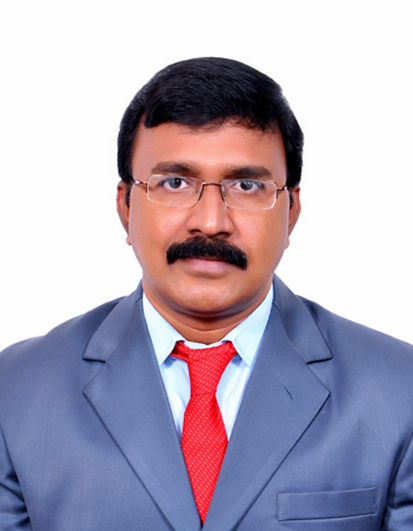

ECM Department
Vision
To emerge as a premier centre in Electronics and Computer engineering with focus on human values and professional ethics
Mission
- To prepare Electronics and Computer Engineering graduates to be a life- long learner with competence in basic sciences, engineering & professional core, interdisciplinary subjects, so that they can have professional career or to pursue higher studies
- Developing liaison with Academia, R & D institutions, software and electronics Industries for exposure of students to the practical aspects in engineering and solution of the industry oriented and societal problems, entrepreneurial pursuit and project management
- Inculcating interpersonal skills, team work, professional ethics, IPR and regulatory issues in students to improve their employability and promoting leadership in changing global environment
- To continuously engage in research and development activities and to promote scientific temper in the graduates

Dr. D. Mohan
HOD, ECM dept
B.Tech Programme Outcomes (POs)
- Engineering knowledge: Apply the knowledge of mathematics, science, engineering fundamentals, and an engineering specialization to the solution of complex engineering problems.
- Graduates will have successful professional career by demonstrating good scientific and engineering breadth to comprehend the problems using modern tools , conduct experiments, analyze the results and design novel products and solutions to the real life problems
- Graduates will be motivated to achieve academic excellence and promote entrepreneurship and skills in project and finance management, pursue research to develop life –long learning in a world of constantly evolving technology
- Graduates will be trained in human values, Professional ethics and Intellectual Property related issues in broader environmental and social context and sustainable development, communication skills, team work skills, leadership and multidisciplinary approach.